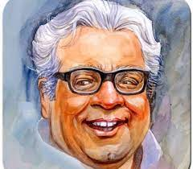

A TRIBUTE TO
P. L. Deshpande

Purushottam Laxman Deshpande (alternatively written as Pu La Deshpande; 8 November 1919 – 12 June 2000),
popularly known by his initials ("Pu. La.") or as P. L. Deshpande, was a Marathi writer and humorist from Maharashtra.
He was also an accomplished film and stage actor, script writer, author, composer, musician, singer and orator.
He was often referred to as "Maharashtra's beloved personality".
was born in Gamdevi Street, Chowpati, Mumbai in a Gaud Saraswat Brahmin (GSB)- family to Laxman Trimbak Deshpande and
Laxmibai
Laxman Deshpande.[citation needed] His maternal grandfather,
Vaman Mangesh Dubhashi, was a Marathi poet and writer. He had translated Rabindranath Tagore's Gitanjali into Marathi,
with the title, "Abhang Gitanjali".The family used to stay at Kenway House, Procter Road in the Grant Road locality in Mumbai.
His family then moved to Jogeshwari. His first 8 years at the newly formed Saraswati Baug Colony are described in the story
titled 'Balpanicha Kaal Sukhacha' or Bālpaṇicā Kāḷ Sukhācā (translation: the happy days of childhood) in his book Purchundi.
Deshpande's works have been translated into several languages including English and Kannada
Education:
Deshpande studied at Parle Tilak Vidyalaya. He attended Ismail Yusuf College after high school and then Fergusson College in Pune for BA. Later,
he attended Government Law College, Mumbai for LLB. He completed Bachelor of Arts (BA) degree in 1950 and then a Master of Arts (MA) degree from Willingdon College,
Sangli.
He also took lessons in playing the harmonium from Dattopant Rajopadhye of Bhaskar Sangitalaya
Films and Music
Pu La Deshpande was a man of many talents. Apart from writing, the talents he used in filmmaking included writing screenplays, directing, acting, composing music,
and singing. He was a proficient in Hindustani classical music.He composed music for many marathi films of 1940s and '50s including 'Amaldar', 'Gulacha Ganapati',
'Ghardhani', 'Chokhamela', 'Dudhbhat', 'Dev Pavla', 'Devbappa', 'Navrabayako', 'Nave Birhad', 'Manache Paan' and 'Mothi Manase'. He was also the
composer for many popular non-film songs in the "bhavegeet" genre sung by singers such as Jyotsna Bhole, Manik Varma and Asha Bhosale.
Awards and Recognition:
- Punyabhushan - 1993
- Padma Bhushan - 1990[16]
- Maharashtra Gaurav (Bahurupi) Award
- Padma Shri - 1966[16]
- Sahitya Akademi Award (Marathi for Vyakti Ani Valli) - 1965
- Sangeet Natak Akademi Award - 1967
- Sangeet Natak Akademi Fellowship - 1979
- Maharashtra Bhushan Award - 1996
- Kalidas Samman - 1987